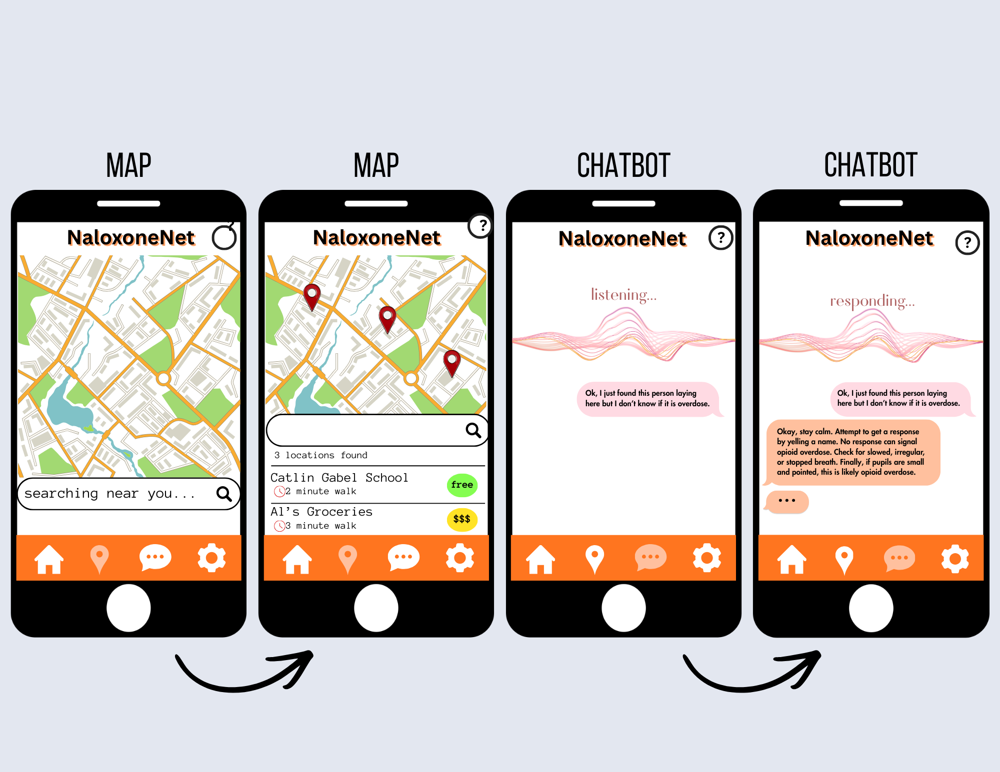
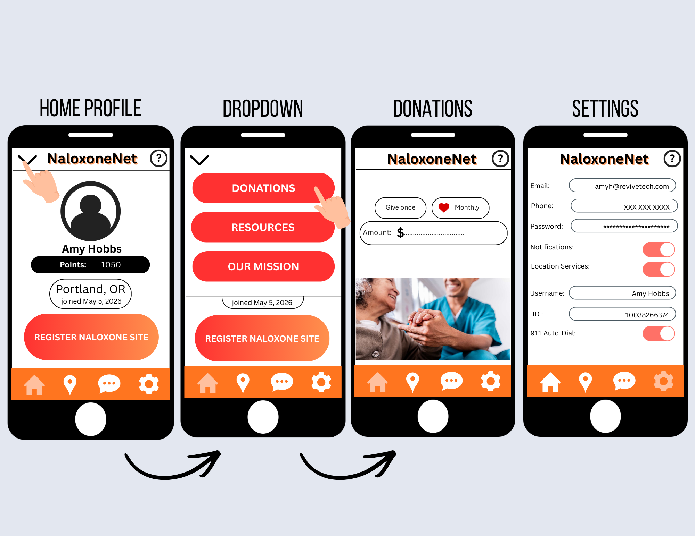

Mobile app interface mockups showcasing map, chatbot, and user features
Interactive map to locate naloxone sites and AI-powered chatbot for real-time administration guidance
User interface for profile management, donations, and app settings including 911 auto-dial feature
